Due to NDA with the client company, high fidelity mockups and implementations cannot be displayed.
About Project.
This was a year-long Behaviour Change and Design Project for a major manufacturer. Their manufacturing facility had seen a number of injuries resulting from accidents on the shop-floor. The challenge for us was to research and design solutions that reduce these accidents, increasing the overall safety of the plant.
My Role
I was the newest member of a 3 person team consisting of a design researcher, project lead and an interaction designer who had already worked on the project for 5 months(first phase). I started off as a Design Researcher for the second stage of the project (5 months) to find insights in new plant areas and validate the findings of the previous stage. This understanding helped me in co-creating solutions with my team and factory stakeholders as a process/experience designer that has led to a 34% reduction in unsafe behaviour.
Research Methodology
Identify unsafe acts, conditions and processes that influence unsafe behaviour in the factory.
- Map and validate unsafe acts & conditions to mindsets from the previous engagement
- Uncover any new acts and influencers of new mindsets
- Uncover new themes across different departments of factory.
Primary Customer: Individuals across all hierarchies across the different departments in the factory.
Scope: Involves research of the Factory Area to inform design of solutions, interfaces and services.
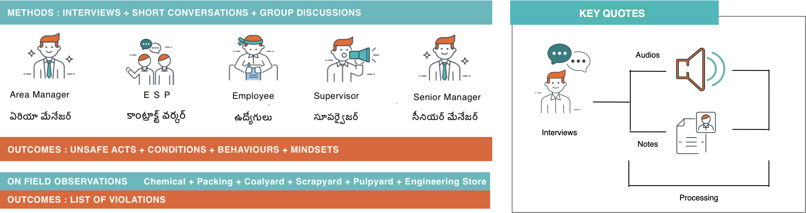
13 User Interviews
2 Group Discussions
30 hrs field observation
11 short conversations
Tools for Research
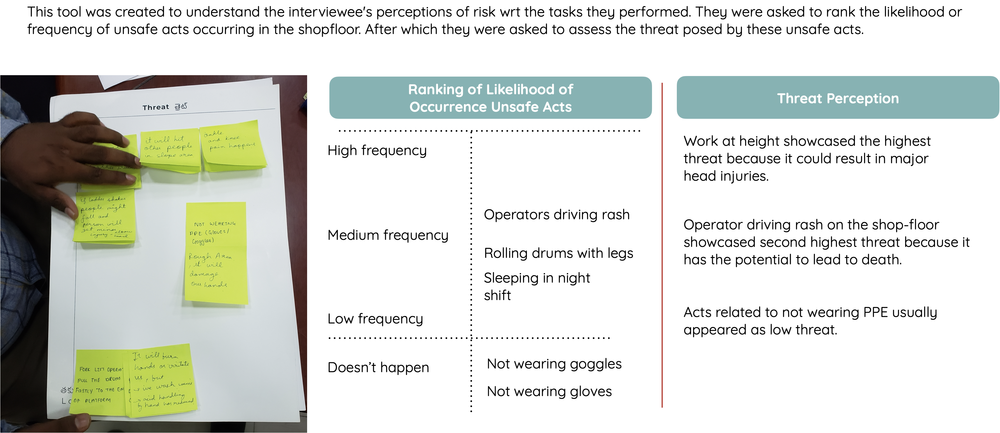 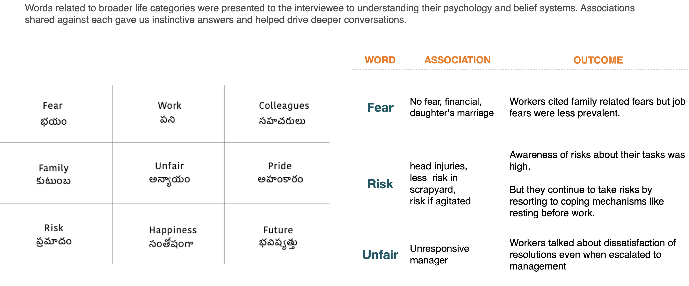
Observation of Unsafe Acts
 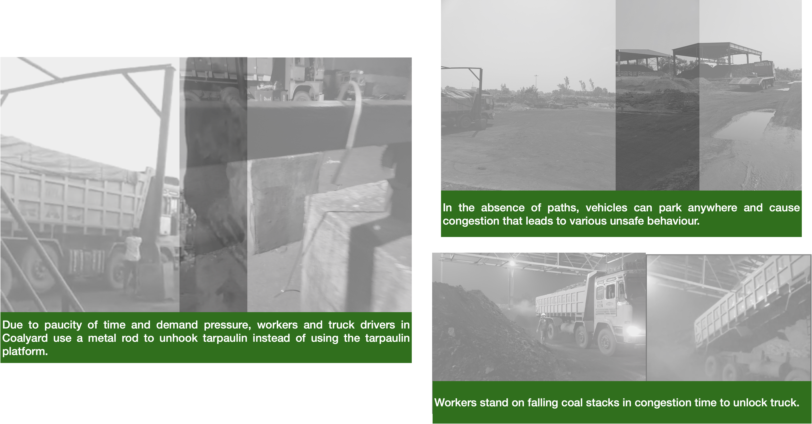
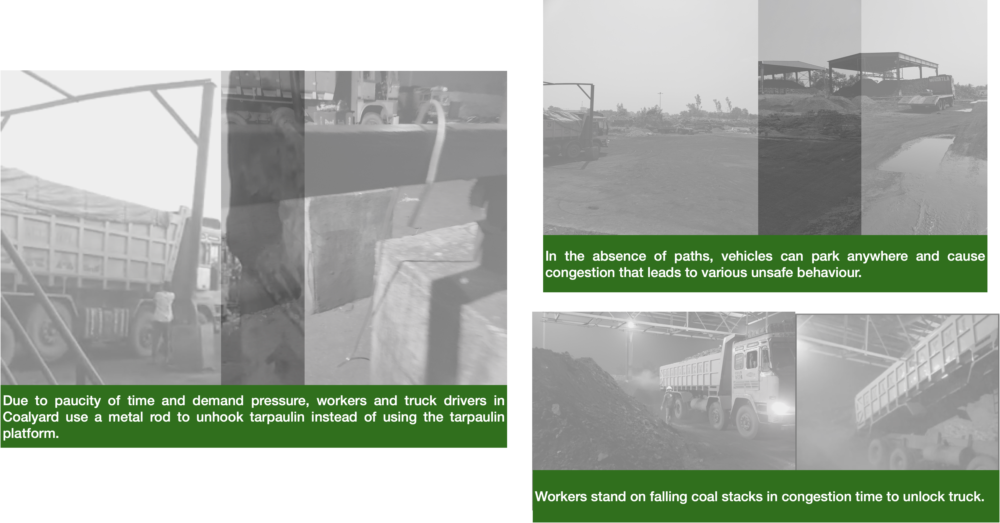
Synthesis
It was time to make sense of the different types of data across different formats - audio clips, videos, data from interactive tools, and interviews. In a structured manner, we used Iceberg Tool and a lot of asking WHY? to arrive at mindsets influencing unsafe acts.
Iceberg Analysis
A system thinking tool that helps you go beyond surface level understanding and get to the deep-rooted causes underlying it.
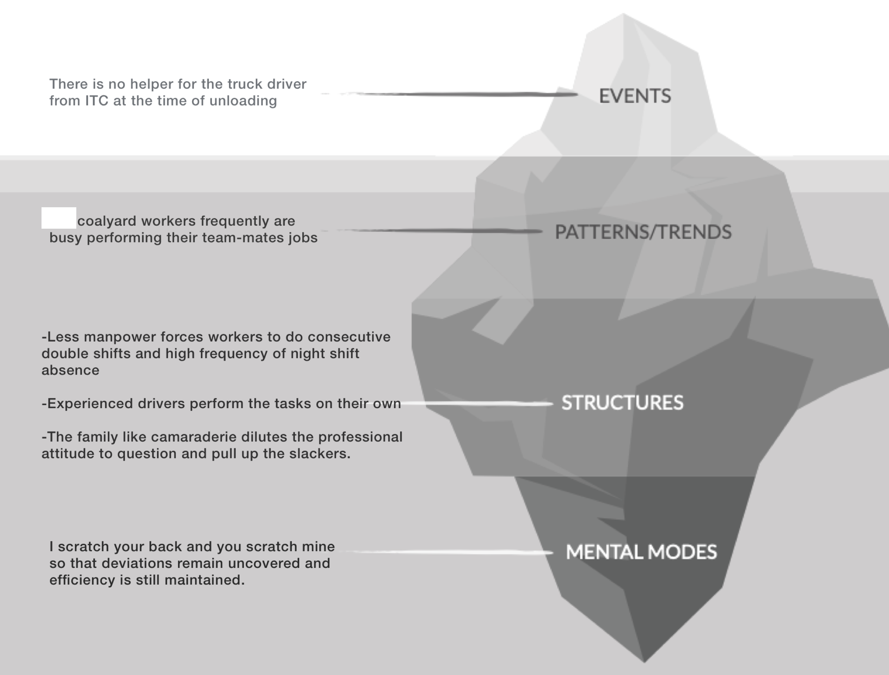
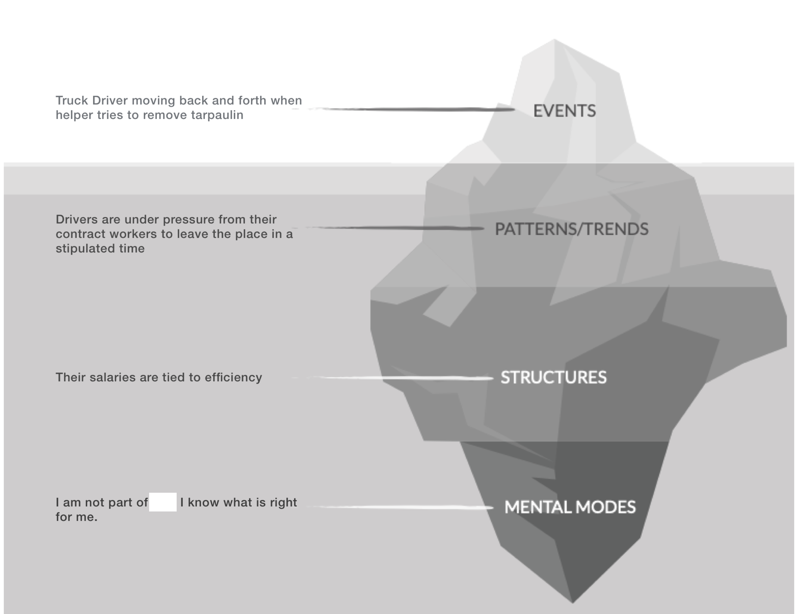
Validated Insights
We uncovered several mindsets that reflect the mindsets of individuals across factory areas. 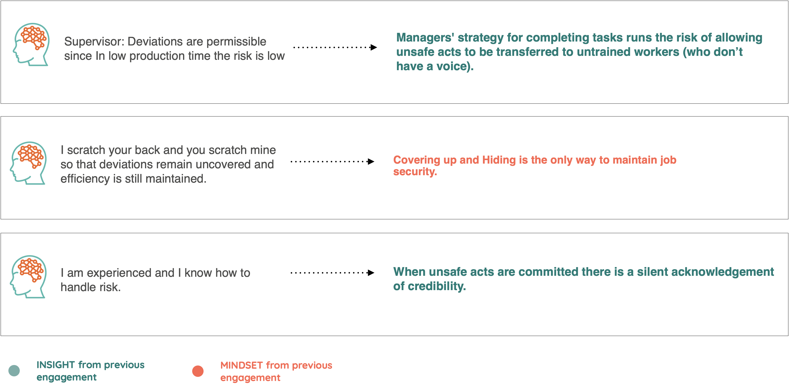New Hypothesis
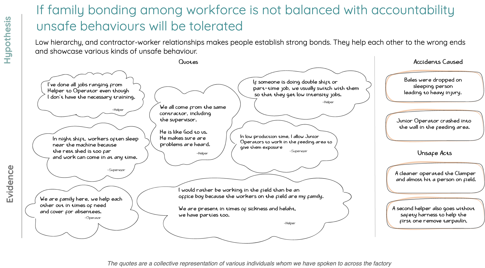 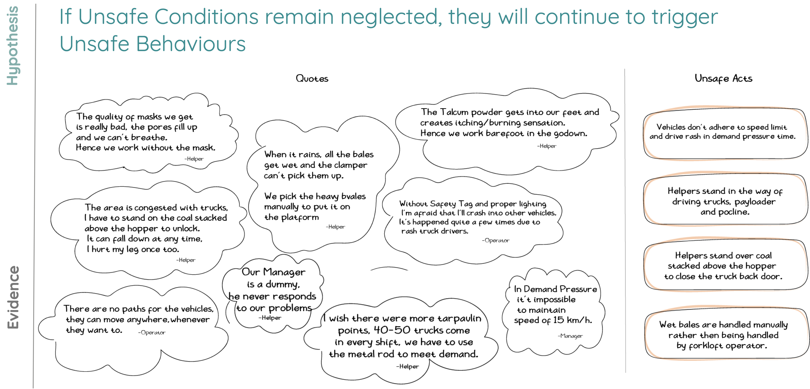Solutions
Our team held several co-creation sessions with key stakeholders involving them in the design process. A Collaborative approach was crucial as the solution had to ultimately work for 9000 employees in the plant.
The solution phase was primarily data-driven as it involved experimentation and testing of multiple ideas to guide our final designs.
Nudging vs Punishing
The simplest perceivable way to curb unsafe activity would be to punish the defaulters. Fine them like traffic police does; cut their salaries, suspend them for a week. While all these look good in theory, we found that this didn’t deter the workers from conducting unsafe activities. Instead, it promoted secrecy among workers to hide details and save themselves a pay cut whenever an accident occurred. “We know they got hurt working in the factory sir, but they come and lie that they got hurt outside the factory.” said a medical doctor working in the plant.
While this highlighted issues with monetary repercussions, it also highlighted what mattered to them, ‘peer relations’, and ‘respect’ from fellow workers. Having worked in the factory for 20 years, workers wore their dedication like a badge of honor, they wouldn’t let that go because they had a little slip somewhere (too cool to wear that seatbelt, you ace driver!).
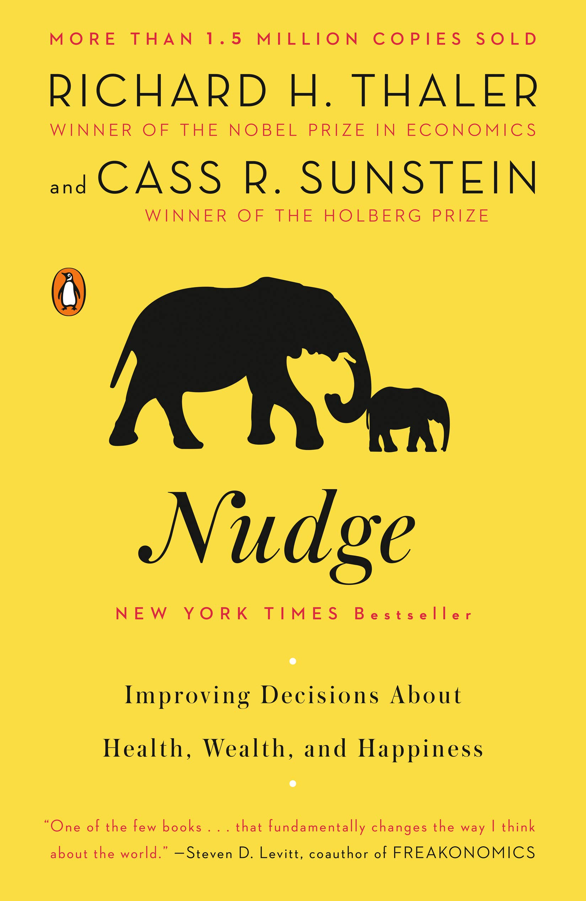
Punishments don’t change behavior, they only enforce behaviour. To lead behaviour change, you have to understand intrinsic motivations along with fears.
Owing to this understanding, we designed a solution that did not punish unsafe behavior but celebrated safe behavior. Our solution utilized the nudge theory popularized by Richard Thaler and Cass Sunstein in their book Nudge: Improving Decisions About Health, Wealth, and Happiness. Consider this definition put forward by the authors
A nudge is any aspect of the choice architecture that alters people’s behavior in a predictable way without forbidding any options or significantly changing their incentives.
Or consider a simpler everyday definition —prod (someone) gently with one’s elbow in order to attract attention.
The word “gentle” is key here as nudge theory does not ascribe penalties or punishments to achieve the outcome. Instead, it targets the individual’s automatic cognitive processes (System 1 in Daniel Kahneman’s Thinking Fast and Slow) to move them towards positive behavior change.
Badge Honour System
Based on our experiment results and the nudge theory, we came up with the concept of a badge honour system. While we had planned to make a UI for the system, it made more sense to design on excel as it was low-cost and gave the client the confidence to move to full-blown software solution.
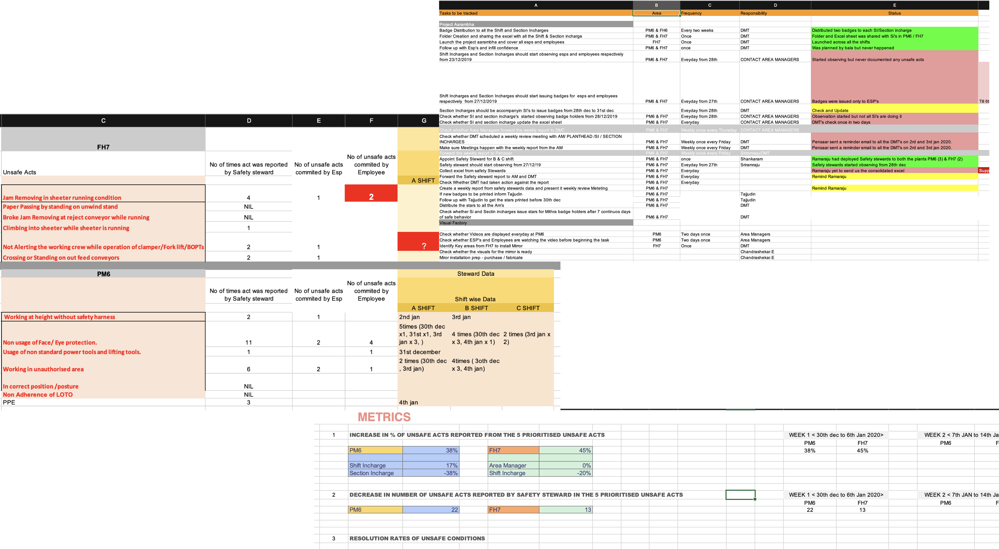Each worker who committed an unsafe act was given a choice to take up either an “honor badge” or a “killer badge” by their supervisor.
It was kept as a secret between the two and his/her behavior was observed for 21 days.
If the worker showed consistent safe behavior, he was given a victory badge which he/she could wear publicly however if he did not show a change in behavior, he was either given another chance or told to keep a “killer badge” for conducting unsafe activities and putting other people’s lives in danger.
The Badge system was based on choice, they were in no way obliged to take up a badge but if given a choice who would you be; an honorable knight or a serial killer (psychopaths, look away). When a worker showcased consistent unsafe behavior, the senior manager was alerted who came down to the shopfloor to give him a pep-talk. Again there were no monetary penalties or repercussions involved except the emotional weight of the Plant CEO telling you that you let him down.
Cultures of Safety & Productivity
Unsafe acts are one side of the coin when it comes to safety, the other side is unsafe conditions that can cause a whole variety of accidents.
These conditions could range from exposed wears lying on the floor to faulty machines that stop working when a worker is conducting risky maneuvers.
Checking for unsafe conditions and fixing them is a duty that the Management has to actively perform. However, in our research, we found that there were glaring gaps between what was promised and what was actually getting fixed. “If they don’t care about our safety then why should we care about following safety norms.” said a worker pointing out the deep distrust between Management and Workers.
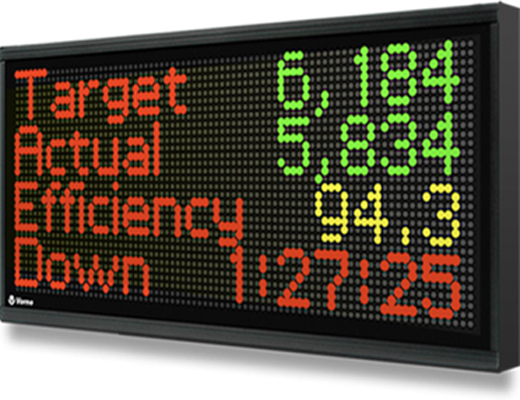
Fixing a machine requires the machine to be shut down for a considerable amount of time and this can lead to a major loss in production. To put it in the words of a manager“If the big boss has told us to give $85 Million profit this year then we have to give it by hook or by crook.”
This pointed out to a deeper issue in the company culture, ‘Productivity trumped everything’. Their appraisals, promotions all depended on getting the maximum number of paper bales out of the factory.
Accountability System
The culture of productivity was a result of a consistent effort by the management to make production visible. Units produced by each area were proudly displayed and faces of star performers were put on the wall for everyone to see. Along with being visible, our solution had to strike a balance between safety & productivity, to get adopted as a new culture by the entire plant. Hence, we introduced the principle of accountability as a means to quell worker distrust and put a check on negligence.
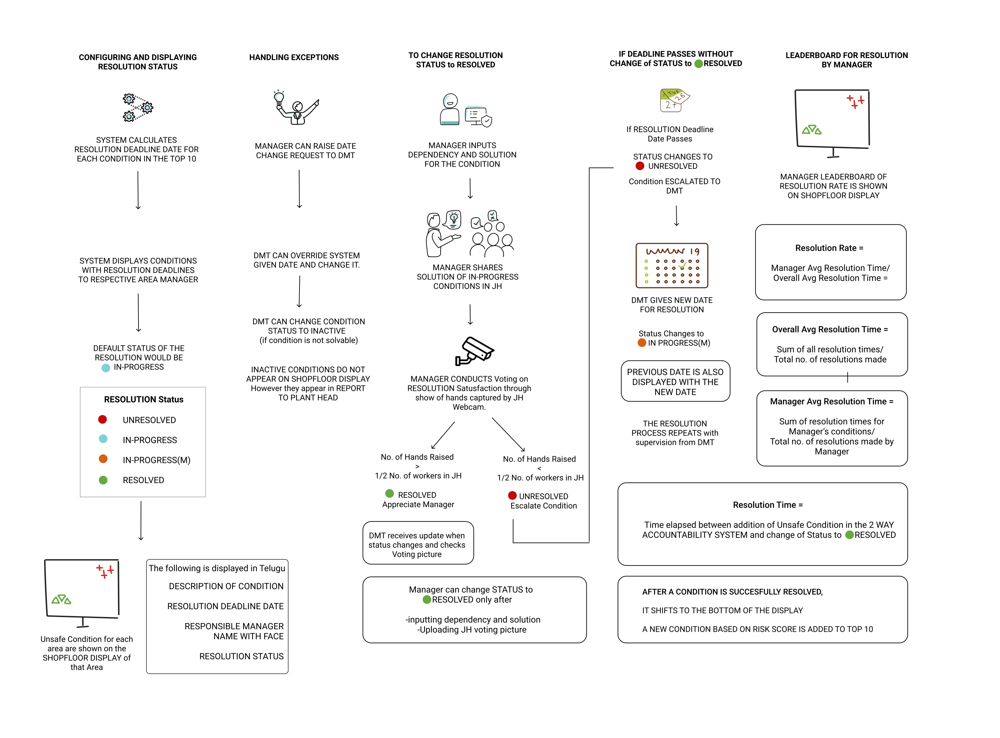Each manager would be held accountable for resolving unsafe conditions in his/her area through a condition resolution system.
Large screens were placed on the shopfloor where each condition reported was displayed with the responsible manager’s face and system-generated resolution date.
If the issue was not resolved within the deadline, it was escalated to a senior manager and his face was shown giving the workers assurance that the issue is now in the hands of a person in authority.
Even if the resolution was met in time, workers voted on the satisfaction of resolution for it to be marked completed, increasing their trust in the management and system.
While accountability was one aspect of the system, we also used our earlier social proof trick to lead behavior change. Each manager was assigned a resolution rate and a leaderboard of managers was displayed to celebrate hard-working managers and raise envy in the low-performers(nothing better than a good points table).
Results
The past year has been spent collecting data from the deployed prototypes and solutions. Collecting results in Behavior Design and measuring impact takes time as Behaviour Change is a slow process. Nevertheless, the early results are extremely positive and have proved the efficacy of the proposed solutions.
A large number of workers who received badges showed a complete turnover in their attitude towards safety. They not only corrected their behavior for the identified act but also swore to not commit other acts as they had a new reputation(victory badge) to maintain. Many workers have started questioning the managers on the status of resolution as they feel that they have a voice in maintaining safety on the shop-floor. “I had tears in my eyes when I heard that our solution made contract workers stand up to the managers and refuse unsafe work.” my colleague remarked. We had spent months empathizing with them, having chai time with them, and becoming their extended family. The long journey gave us an emotional response that espouses human-centered design, a win for them became a win for us.
Yes, you can change people’s minds. Yes, you change culture but not with the hostility of an angsty teenager but with the empathy of a wise old man. Culture is a set of shared norms, customs, and beliefs, once you open yourself up to understanding where these beliefs come from(without prejudice), you can work towards altering them.
Thanks a lot for reading. This a small part of a large body of research and design work spanning over a year. This is an ongoing project with lots of experiments and prototypes still being tested out.